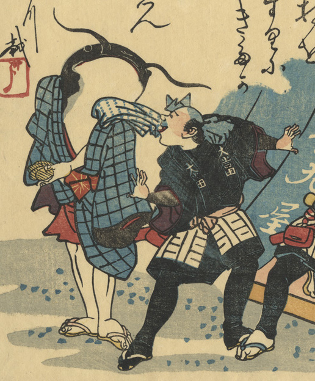

肩に手ぬぐいを置き、小判を持って立つ鯰。隣の大工と何かを語らっている。
出典：親書誌：U426_nichibunken_0328：金持をゆすりにきたか大地しん；カネモチ オ ユスリ ニ キタカ オオジシン／日付：2014／資源識別子：U426_nichibunken_0328_0001_0000
Copyright (c)2010- International Research Center for Japanese Studies, Kyoto, Japan. All rights reserved.